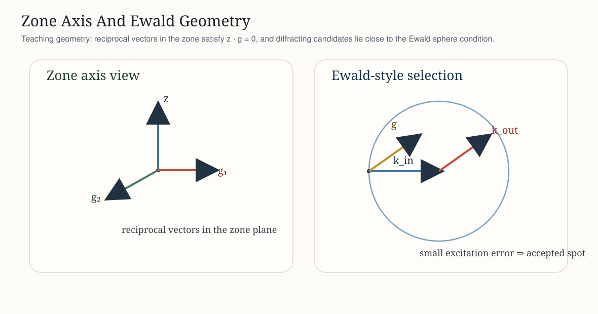
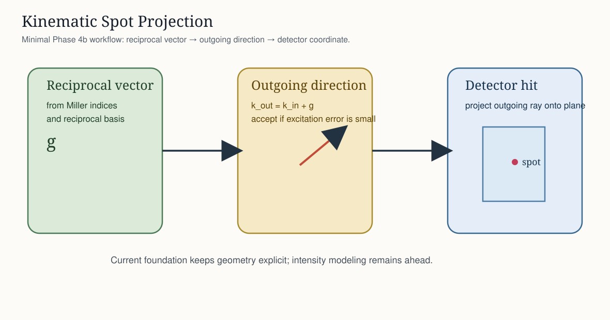

Diffraction: Reciprocal Space And Kinematic Spots¶
PyTex now extends the initial Phase 4 geometry foundation with explicit reciprocal-space objects, zone-axis semantics, and a minimal kinematic spot simulation workflow.
Scope¶
explicit
ReciprocalLatticeVectorobjects in reciprocal basis coordinatesexplicit
ZoneAxisobjects in direct-lattice direction coordinatesspecimen-to-laboratory rotation carried explicitly by
DiffractionGeometryEwald-style kinematic spot selection from reciprocal vectors
detector projection of predicted spots
symmetry-aware reflection-family grouping
explicit detector acceptance masks
minimal proxy intensity weighting for spot ranking
detector-space clustering and simulated/observed association primitives
orientation-candidate ranking on top of the detector-space association layer
local orientation-candidate refinement
family-level indexing reports

Core Objects¶
Reciprocal Lattice Vectors¶
PyTex now exposes ReciprocalLatticeVector so reciprocal-space quantities do not have to be smuggled through bare arrays. A reciprocal vector has:
coordinates in reciprocal basis units
a phase that fixes the lattice and reciprocal basis
a Cartesian vector and magnitude in inverse angstroms
Zone Axes¶
PyTex now exposes ZoneAxis as a direct-space object with explicit phase meaning. This is pedagogically and scientifically useful because zone axes are not just arbitrary directions; they define a geometric relation between the beam and the reciprocal lattice under diffraction conditions.
Ewald-Style Spot Selection¶
The current kinematic simulation follows the standard teaching geometry:
construct reciprocal vectors from Miller indices
map them from crystal coordinates into specimen coordinates through the orientation
map specimen coordinates into laboratory coordinates through the explicit specimen-to-lab rotation
form
k_out = k_in + gkeep candidates whose excitation error is small enough
project the outgoing direction onto the detector plane
group symmetry-equivalent reflections into explicit reflection families
assign a minimal proxy intensity for ranking and filtering

Example¶
import numpy as np
from pytex import (
DetectorAcceptanceMask,
DiffractionGeometry,
FrameDomain,
Handedness,
KinematicSimulation,
Lattice,
Orientation,
Phase,
ReferenceFrame,
Rotation,
SymmetrySpec,
ZoneAxis,
)
crystal = ReferenceFrame("crystal", FrameDomain.CRYSTAL, ("a", "b", "c"), Handedness.RIGHT)
specimen = ReferenceFrame("specimen", FrameDomain.SPECIMEN, ("x", "y", "z"), Handedness.RIGHT)
detector = ReferenceFrame("detector", FrameDomain.DETECTOR, ("u", "v", "n"), Handedness.RIGHT)
lab = ReferenceFrame("lab", FrameDomain.LABORATORY, ("X", "Y", "Z"), Handedness.RIGHT)
geometry = DiffractionGeometry(
detector_frame=detector,
specimen_frame=specimen,
laboratory_frame=lab,
beam_energy_kev=200.0,
camera_length_mm=150.0,
pattern_center=np.array([0.5, 0.5, 0.7]),
detector_pixel_size_um=(50.0, 50.0),
detector_shape=(1024, 1024),
)
symmetry = SymmetrySpec.identity(reference_frame=crystal)
lattice = Lattice(3.0, 3.0, 3.0, 90.0, 90.0, 90.0, crystal_frame=crystal)
phase = Phase("demo", lattice=lattice, symmetry=symmetry, crystal_frame=crystal)
orientation = Orientation(
rotation=Rotation.identity(),
crystal_frame=crystal,
specimen_frame=specimen,
symmetry=symmetry,
phase=phase,
)
simulation = KinematicSimulation.simulate_spots(
geometry,
phase,
np.array([[1, 0, 0], [-1, 0, 0], [0, 1, 0], [0, 0, 1]]),
orientation=orientation,
zone_axis=ZoneAxis(indices=np.array([0, 0, 1]), phase=phase),
max_excitation_error_inv_angstrom=0.2,
acceptance_mask=DetectorAcceptanceMask(max_radius_px=250.0),
intensity_model="kinematic_proxy",
)
The returned KinematicSimulation now carries both per-spot state and grouped reflection-family state:
each
KinematicSpotrecordsintensity,accepted_by_mask, andfamily_idsimulation.reflection_familiesrecords multiplicity, representative reflection, and grouped spot indicessimulation.accepted_spots()returns the subset that both hits the detector and passes the optional acceptance masksimulation.associate_to_pattern()builds detector-space indexing candidates against clustered observationsKinematicSimulation.rank_orientation_candidates()ranks candidate orientations against one observed patternKinematicSimulation.refine_orientation_candidate()performs a deterministic local Euler-space search around a seed orientation
Reflection Families¶
Reflection families are grouped in crystal reciprocal space before detector projection. PyTex canonicalizes each reciprocal vector under the phase symmetry and keeps the reciprocal-vector magnitude in the family key, so equivalent directions with different order, such as (100) and (200), do not collapse into the same family.
This grouping serves two purposes:
it makes multiplicity explicit for downstream indexing and teaching workflows
it allows optional family-level deduplication while still preserving the full generated spot set by default
Detector Acceptance Masks¶
DetectorAcceptanceMask is a simple but explicit acceptance contract for downstream diffraction workflows. The current implementation supports:
rectangular inset rejection from the detector edges
optional radial acceptance around the explicit pattern center
This separates three states that are often conflated in weaker implementations:
a candidate ray can be physically projectable to the detector plane
it can land within the detector bounds
it can pass the workflow-specific acceptance mask
PyTex records the last condition explicitly as accepted_by_mask.
Proxy Intensity Model¶
The current intensity model is deliberately modest and explicitly labeled as a proxy. In kinematic_proxy mode, PyTex combines:
a Lorentzian-style penalty on excitation error
a reciprocal-magnitude penalty so higher-order reflections are not ranked solely by excitation error
This is still not a structure-factor or dynamical model, but it is a more useful ranking signal than excitation error alone.
Indexing Primitives¶
PyTex now includes the first detector-space indexing primitives needed to move beyond spot generation alone.
DiffractionPattern.cluster_observations()groups nearby observed coordinates into detector-space clustersKinematicSimulation.associate_to_pattern()matches simulated spots against those clustersIndexingCandidatereports match fraction, mean detector residual, unmatched observations, unmatched simulated spots, and an aggregate score
This is now beyond pure association. PyTex has a stable matching contract and a first deterministic refinement surface built on top of it.
Orientation Candidate Ranking¶
PyTex now also provides a first orientation-ranking surface on top of the association primitive.
provide a set of candidate orientations
simulate each candidate against the same reflection list
associate each simulated pattern to the observed detector clusters
rank the resulting candidates by indexing score and residual
This is still not a full refinement engine, but it is the first stable bridge from “simulate spots” to “compare candidate orientations against data”.
Local Refinement¶
PyTex now includes a simple but explicit local refinement routine:
start from a seed orientation
convert it into Bunge Euler angles
evaluate a local Cartesian grid in ((\phi_1, \Phi, \phi_2)) space
score each candidate through the same detector-space association workflow
keep the best candidate and shrink the search window
This is deliberately modest. It is a deterministic local search, not yet a continuous optimizer or a statistically calibrated refinement engine. But it is scientifically interpretable and it reuses the same observable score surface as the rest of the indexing workflow.
Family-Level Indexing Reports¶
IndexingCandidate.family_reports() now lifts detector-space matches to the reflection-family level. Each FamilyIndexingReport records:
the reflection-family identifier
representative Miller indices
full crystallographic multiplicity
how many simulated family members were actually represented in the generated pattern
how many of those family members matched observed detector clusters
matched fraction, total family intensity, and mean detector residual
This is useful because indexing decisions are often more interpretable at the family level than at the individual-spot level.
Interpretation Notes¶
this is a geometry-first kinematic foundation, not a full dynamical or even full kinematic intensity engine
zone-axis filtering uses explicit direct-space semantics instead of ad hoc array tests
excitation error is currently a simple Ewald-distance style scalar derived from wavevector magnitudes
Miller inputs are validated as integer-valued triplets before reciprocal vectors are constructed
spot coordinates may still fall outside the detector bounds; that status is retained explicitly on each spot
two_theta_radandazimuth_radare derived from the outgoing direction itself, so off-detector spots still retain valid angular observablesreflection-family grouping is symmetry-aware but remains purely crystallographic; no Friedel-law or structure-factor assumptions are folded in
proxy intensities are pedagogical ranking values, not physically calibrated intensities
Current Limits¶
no structure-factor, polarization, or dynamical intensity model
no continuous gradient-style or probabilistic refinement workflow yet
no adapter-backed diffraction simulation bridge yet
{kind=link}
{kind=link}